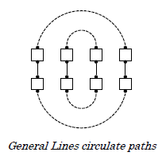
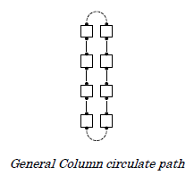
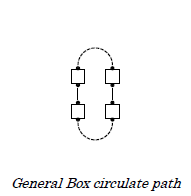
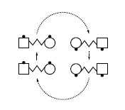
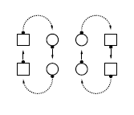
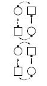

In general, all Circulates have each dancer move forward along a defined path (called the "circulate path") to the next dancer position. The definitions below will refer to the following diagrams.
Directed (active) dancers move forward along the circulate path to the next position. The circulate paths for various formations are indicated by the dotted lines in the diagrams.

No call in the Circulate Family can be used with the Ocean Wave Rule or the Facing Couples Rule (see "Part 1: General: Conventions and Rule").
Fractions are proper and occasionally used with calls in the Circulate family. See "Part 4: Additional Detail: Fractions".
The timing for all Circulates is 4, but if the Circulate has the effect of a Pass Thru, the timing is 2.
The various types of Circulates and various ways to name them are described in detail in the following sections.
Centers (or Ends) Circulate
Girls (or Boys) Circulate
Everyone Circulate
Circulate
Designated dancers move forward to the next dancer position, following their General Lines or General Column circulate path.
A dancer looking out of the formation walks in a 180-degree arc and finishes in the next position on the other side, looking in. Others walk forward one dancer position.

It is improper to teach that All 8 Circulate always means "ends stay ends and centers stay centers". This statement is true from Ocean Waves and Two-Faced Lines, but not from Columns.
From Two-Faced Lines, Couples Circulate is a more common way to call All 8 Circulate. From Columns, Single File Circulate is the same as All 8 Circulate.
When dancers go in opposite directions along the same path, All 8 Circulate is often equivalent to other calls (e.g., Pass Thru or Trade By). These applications are proper, but confusing to many dancers. Except in an instructional setting, they are often perceived as attempts to trick the dancers and should probably be avoided. On the other hand, All 8 Circulate from Three And One Lines is acceptable, though still difficult and uncommon at Mainstream.
Circulate
Column Circulate
Single File Circulate
Box Circulate and Split Circulate, while similar, are covered in two separate cases.
Heads Touch 1/4; Heads Box Circulate
Centers Box Circulate
Pass To The Center; Centers Touch 1/4 and Box Circulate
Box Circulate is proper only after specifying a group of four dancers or, rarely, groups of four dancers. For example, one could say "On each side Box Circulate" but "Split Circulate" would be more common and preferred.
Once dancers in a Box Circulate formation are identified, Box Circulate and Circulate are the same, and many callers will say only "Circulate".

© Copyright 1994, 2000-2017 by CALLERLAB Inc., The International Association of Square Dance Callers. Permission to reprint, republish, and create derivative works without royalty is hereby granted, provided this notice appears. Publication on the Internet of derivative works without royalty is hereby granted provided this notice appears. Permission to quote parts or all of this document without royalty is hereby granted, provided this notice is included. Information contained herein shall not be changed nor revised in any derivation or publication.
The call "(Named Dancers) Circulate" is usually used from General Lines.
When all dancers are active (e.g., Everyone Circulate), the comments in All 8 Circulate also apply.
Circulate is the same as Everyone Circulate, unless it is clear from the previous call that only certain dancers are active (e.g., Dive Thru, Centers Touch 1/4 and Circulate).
Not all dancers on a given circulate path need to go in the same direction. Dancers going in opposite directions along the same path will pass right shoulders. (See "Part 1: General: Conventions and Rules: Passing Rule".)
(Named Dancers) Circulate is sometimes used more generally with unusual formations. Each dancer walks forward in a smooth path to the next dancer position. For example:
- Ocean Waves: Split Circulate 1 1/2, Center Wave Swing Thru, Others Circulate
- Two-Faced Lines: Centers Hinge, Outside 6 Circulate, Centers Hinge
- Columns: Circulate 1 1/2, Center 6 Circulate 1 1/2, Center 4 Walk And Dodge, Others Bend The Line
- Facing Lines: Outsides Touch 1/4, Centers Pass the Ocean, Outside 6 Circulate
- Tidal Wave: Center 4 Hinge, Same Ones Circulate (or use Box Circulate)
It is improper for (Named Dancers) Circulate to cause a circulating dancer to end on the same spot as an inactive dancer, e.g., from Columns, Ends Circulate. From Columns, "Centers Circulate" is only proper if the caller makes it clear that the dancers must stay in the center, e.g., "Boys work in the center and Circulate". Box Circulate could instead be used, e.g., “Centers Box Circulate”.